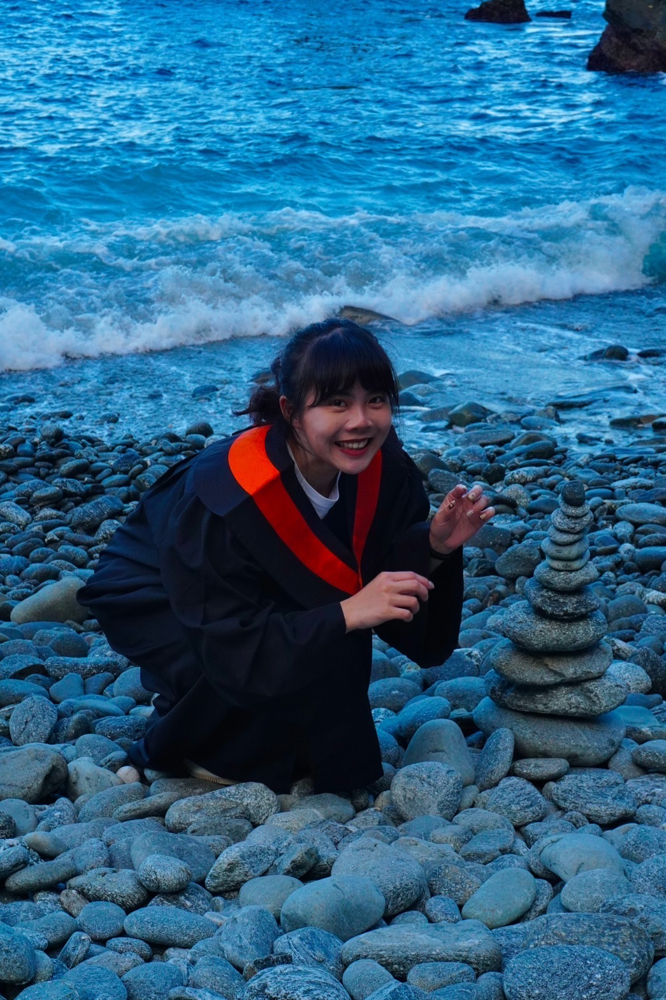

ღAbout Me
嗨呦～我是邱逸靜！可以叫我YJ或是歪追～
熱情如火的屏東是我的故鄉
生日是91年8月4日 ♌
想要找我的話請撥打：0905207846 跟我取得聯繫
目前就讀於中原大學工業與系統工程管理學系
很喜歡K-POP，是追了十年的老K寶嚕
#音樂 #跳舞 #追星
#EXO #SVT #BIGBANG
ღEduction
ღSkills
- 生產管理
- 品質管制
- 好奇心
- 可靠度工程
- 領導力
- 行動力
- 程式語言
- 數據分析
- 溝通力
ღExperience
❦工讀經歷❦
旭宏金屬股份有限公司 智慧製造部實習生
「Just Do It! 」— 實務經驗累積
實習負責執行燒結爐尾產品對應載具標準化作業，透過作業觀察與現場人員進行溝通，在上千種產品中找出規則，鍛練自己對於MECE 法則於實務中的應用能力，最終將其量化為建立起燒結爐尾載具判斷模型的依據。
我也參與廠內回收粉比例田口實驗的專案。目標是使用田口方法評估回收粉生產出品質與原始粉一致產品的可能性。應用自己過去實驗設計課程中所學的知識來進行數據分析。
☪社團生活☪
中原大學 熱舞社
「No Dance, No Life」— 熱舞社
除了課業之餘，我亦積極參與社團活動，尤其是在大學期間，實現自己一直以來都想進熱舞社的夢想。我是一個喜歡表演且熱愛舞台的人，在社團活動期間，我陸續地參與了包含期中小型成發、期末大型成發以及參與了HUG全國舞展的比賽。
在熱舞社中不僅單純提升我自己的舞技，更讓我學習在繁忙的生活中做好時間管理，在課業以及各種表演之間取得平衡。在社團中也拓展了自己的人際關係，並學習在排舞時與人合作及溝通。
♛服務經歷♛
教育部數位學伴計劃 大學伴
「以生命陪伴生命，以生活教導生活。」— 教育部數位學伴計劃 大學伴
數位學伴計劃我陪伴一位偏鄉的新住民妹妹學習。計劃執行期間，除了學習體察他人感受，並給予適當的回應，也提升自己將複雜問題轉化為簡單易懂的能力。
我認為這段寶貴的經驗並非僅是單方面提供小學伴學習和心靈陪伴的過程，在這段時間裡面從小學伴身上看見與眾不同的生命力，於我而言更是雙向互動成長的機會。

☘︎論文發表☘︎
APIEMS2023
「踏出舒適圈，接受刺激，成就更好的自己。 」— 工業系給我的養分
把握實習期間所執行的專案—回收粉比例田口實驗，我蒐集專案資料並進行數據分析，最將此專案內容整理成研討會論文，提交到第23屆亞太工業工程與管理系統學術研討會。
一人勇闖吉隆坡，打開國際視野，更堅信自己想用專業為永續發展貢獻！